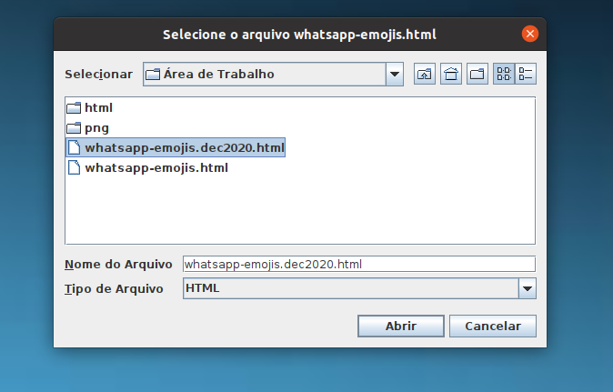
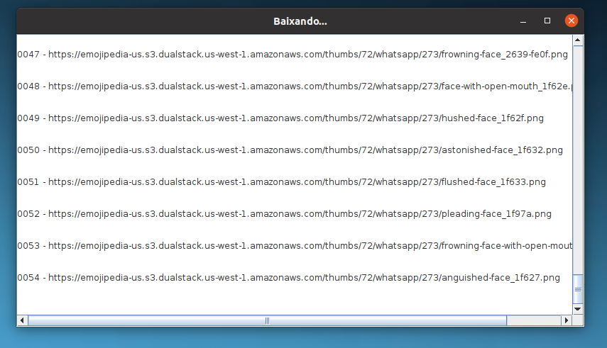
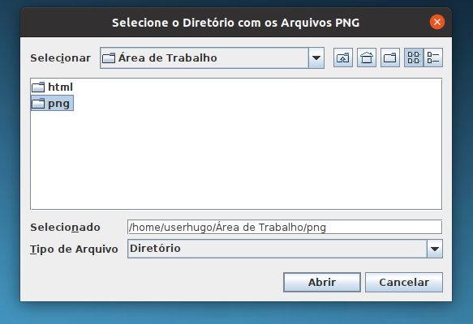
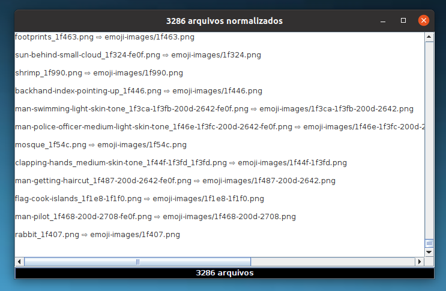
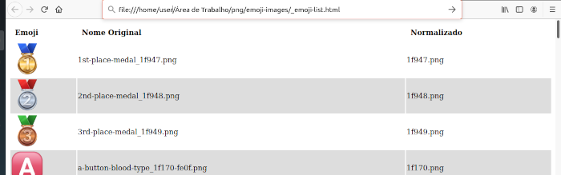
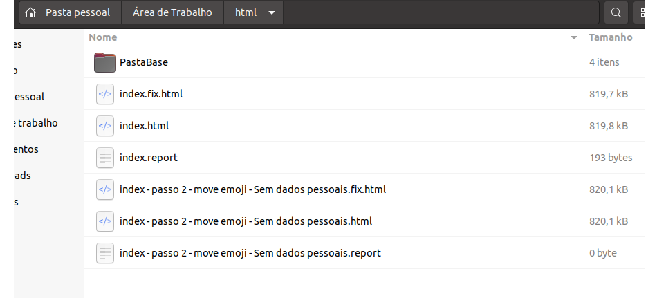
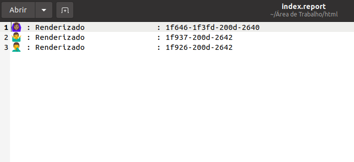

Será necessário obter os arquivos com as figuras dos emojis utilizados pelo app Whatsapp. Arquivos que estão disponíveis no site da Emojipedia.
Execute o aplicativo GetPngs.jar para fazer o download destes arquivos. Ou então os obtenha aqui.
Se preferir executar GetPngs.jar ele irá baixar o conjunto atualizado dos emojis do Whatsapp. No momento em que esta página está sendo escrita a última atualização ocorreu em 9 de dezembro de 2020. Para isso você deve copiar o código fonte de https://emojipedia.org/whatsapp/ para um arquivo html. (Use "Exibir código fonte da página" no Chrome™ e copie e cole em um editor de texto. Salve com extensão html.)
Este será o arquivo solicitado pelo GetPngs.jar para poder baixar o conjunto dos emojis. Ao ser executado, o programa simplesmente abre a janela de navegação de arquivos exibida abaixo para que você indique a localização do arquivo criado no passo acima. Não esqueça de criar este arquivo com a extensão html.
Basta clicar em Abrir e o programa começa a baixar. O arquivo whatsapp-emojis.dec2020.html que se vê na figura já está no repositório. Use git pull para obtê-lo.
Com este arquivo GetPngs.jar irá baixar 3.286 figurinhas de emojis. 115 a mais do que as que estão listadas no whatsapp-emojis.html, que também se encontra disponível no repositório. Porque whatsapp-emojis.dec2020.html já tem os acréscimos de 9 de dezembro último.
Logo, é preferível atualizar o repositório local com git pull e indicar este novo arquivo (whatsapp-emojis.dec2020.html) para o aplicativo GetPngs.jar.
O programa irá exibir uma janela como a da figura abaixo enquanto estiver fazendo o download e ao final todos os arquivos estarão em uma pasta nomeada png, criada no diretório corrente. (Se for executado em plataformas Linux, esta pasta será criada no diretório home do usuário).
Mas se por acaso estiver vendo esta página muito depois de dezembro de 2020, então o próprio arquivo whatsapp-emojis.dec2020.html deverá estar desatualizado. Então você pode criar um novo arquivo de onde o GetPngs.jar irá extrair os dados realizando o procedimento descrito acima.
Todos estes arquivos obtidos no passo 1 estarão com seus nomes originais. Estes incluem informação suficiente para que se determine a string de codepoints de cada respectivo emoji. Esta string é que deve ser o novo nome para o arquivo, pois o programa que corrige as páginas com as conversas do whatsapp web, precisa associar os codepoints que ele irá encontrar nas tags dessa página, com o arquivo PNG contendo exatamente a figura do emoji que a tag "quer" mostrar.
Isto nos leva a este segundo passo: executar o aplicativo Normalize.jar.
Rode o programa e apenas indique na janela mostrada abaixo o local da pasta png criada no passo 1.
Normalize.jar cria uma pasta de nome emoji-images dentro de png e copia todos os arquivos renomeados para esta pasta.
Nesta pasta deverá também encontrar um arquivo de log que pode ser aberto no navegador: _emoji-list.html
A pasta emoji-images deverá então ser copiada para dentro de PastaBase. Esta, por sua vez, é a pasta com todos os arquivos comuns.
Se você põe todos os arquivos comuns das conversas do app em PastaBase, faz sentido que emoji-images também esteja ali. E note que quando a aplicação Fix.jar editar as páginas salvas com conversas do app, este programa espera que todos os arquivos css (e outros referentes às páginas) também estejam em PastaBase. Fix.jar fará edições considerando que uma PastaBase existe no mesmo diretório dos arquivos html onde você salvou suas conversas pelo app.
Isto será a tarefa do Fix.jar. Rode este programa e apenas indique a localização da pasta com os arquivos onde você salvou conversas do Whatsapp. O programa irá criar cópias destes arquivos (para todos os HTML que encontrar nesta pasta) e estas cópias deverão ser capazes de renderizar corretamente os emojis inseridos pelos usuários no app.
Lembre-se que dentro desta pasta também deve estar a PastaBase com os arquivos CSS e outros, e para essa mesma PastaBase deve ter sido copiada a pasta emoji-images, com os arquivos PNG que Fix.jar espera utilizar.
Cada cópia gerada terá o mesmo nome do arquivo original, acrescido do sufixo .fix. Por exemplo: se o programa encontrar um arquivo index.html nesta pasta, ele irá tentar criar uma cópia editada deste arquivo e lhe dará o nome de index.fix.html
Também para cada arquivo HTML encontrado, será gerado um arquivo de relatório especificando todos os emojis encontrados no arquivo, e como o programa foi capaz de renderizar cada um deles.
Fix.jar renderiza cada emoji encontrado da melhor maneira que puder. De preferência tenta usar o arquivo PNG com a figura exata do emoji indicado na tag. Mas se este arquivo não existir, ele vai procurar um que se aproxime (neste caso note que a figura será mostrada com uma moldura vermelha!). Mas se nem isso existir na pasta emoji-images, a solução será exibir o caractere referente a este emoji.
Portanto além do index.fix.html, você iria encontrar também um arquivo de nome index.report, listando todos os emojis renderizados em index.fix.html e como cada um foi renderizado. E também os codepoints de cada um destes emojis.
Isto é útil caso algum emoji não tenha sido renderizado corretamente por não existir um arquivo para sua imagem. Aí você pode pesquisar por estes codepoints na Emojipedia e encontrar o PNG correspondente. Basta pegar este arquivo, renomea-lo como sugerido (os codepoints), e copia-lo para a pasta emoji-images. A partir disso este emoji passa a ser renderizado nas próximas vezes que executar Fix.jar.
No entanto observe que Fix.jar não vai processar arquivos que já tenha processado anteriormente! Se quiser que ele corrija novamente o mesmo arquivo, é necessário deletar os arquivos .fix e .report criados previamente.
A imagem abaixo mostra uma pasta de nome html onde existiam os arquivos index - passo 2 - move emoji - Sem dados pessoais.html e index.html. Note os arquivos que foram criados após executar Fix.jar e a presença de PastaBase neste diretório.
Veja como ficou o index.report. Neste caso é informado que todos os 3 emojis encontrados foram renderizados perfeitamente.
De fato foram.